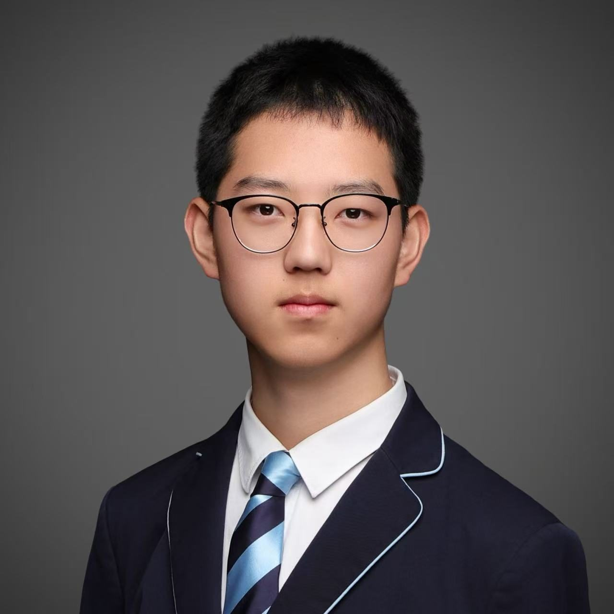

From RC racing to mechanical engineering: I repair, design, and teach.
Edward Wang (王张弛) — a racer who engineers, and an engineer who teaches.
A devoted RC racer and National Level-2 Athlete of China, I have won championships at national, provincial, municipal and district vehicle-model competitions.
Passionate about STEAM, I hold three national patents; my innovation project won the Gold Award at the China Wuhan Innovation Method Competition, and several of my papers have been published or submitted to EI-indexed journals.
I have founded multiple student clubs and the High School Society of Racing Car Technologies (HSRT), leading teams to top results in racing and innovation competitions.
I launched the STEM Education Equity Initiative, delivering volunteer STEM courses to primary and secondary schools and the Wuhan Science and Technology Museum — and proposed the “Experience Gap” concept in STEM education.
I love painting and calligraphy, with ten years of practice. I am also the creator of the “ISA RC Racing” WeChat Official Account and Video Account.
Contact — edwardwangzc@163.com
